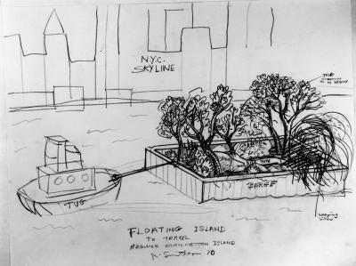
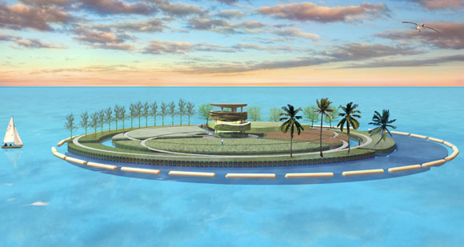

Our group started small, focusing on using recycled plastic to purify water.
Floating Islands made of recycled plastic have the potential to clean water supplies throughout the world. On a larger scale they have the potential to transform trash into ocean habitats.
Floating bio habitats:
Artist Robert Smithson (creator of Spiral Jetty) originally envisioned a small Floating Island pulled by a tug boat.

The Dutch firm WHIM Architecture has created renderings of a large “Recycled Island” in the Pacific.

Atlanta-based Bioponica soilless gardening.
Floating Islands International - licensees include Floating Islands Southeast in Chapel Hill, NC.